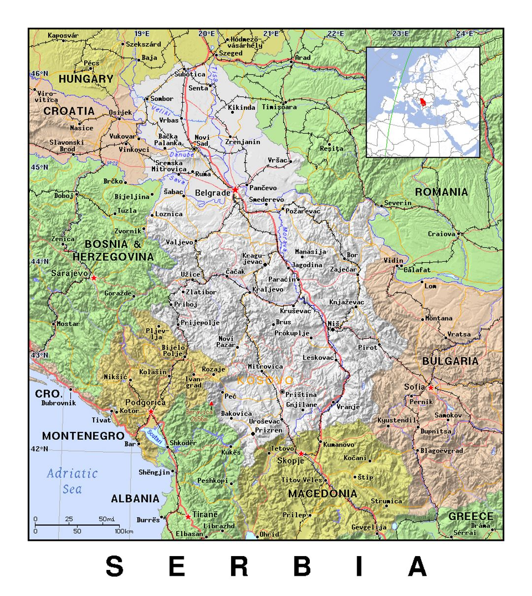
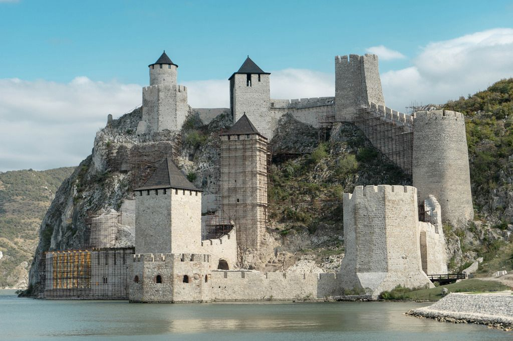
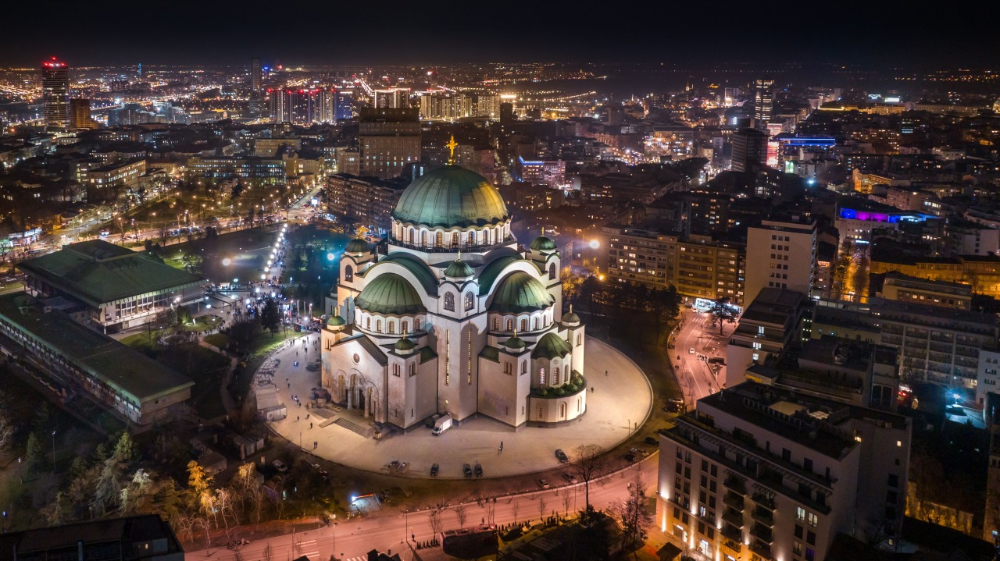
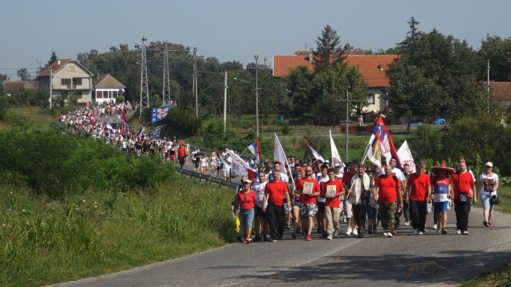
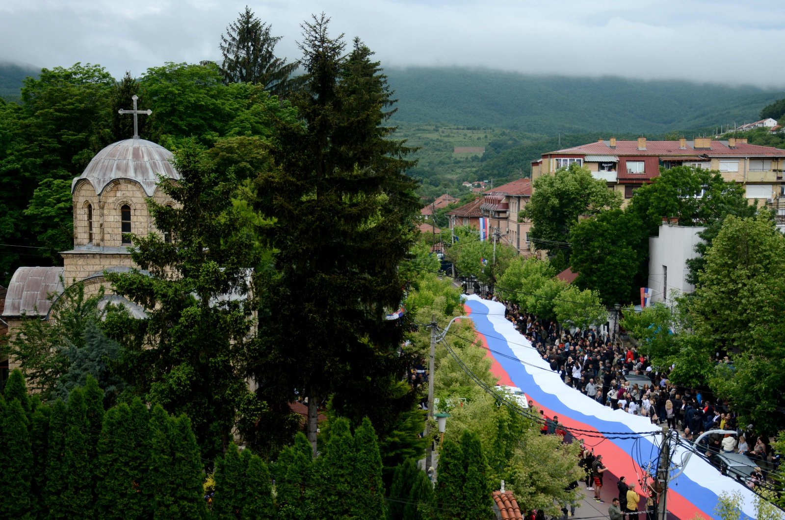
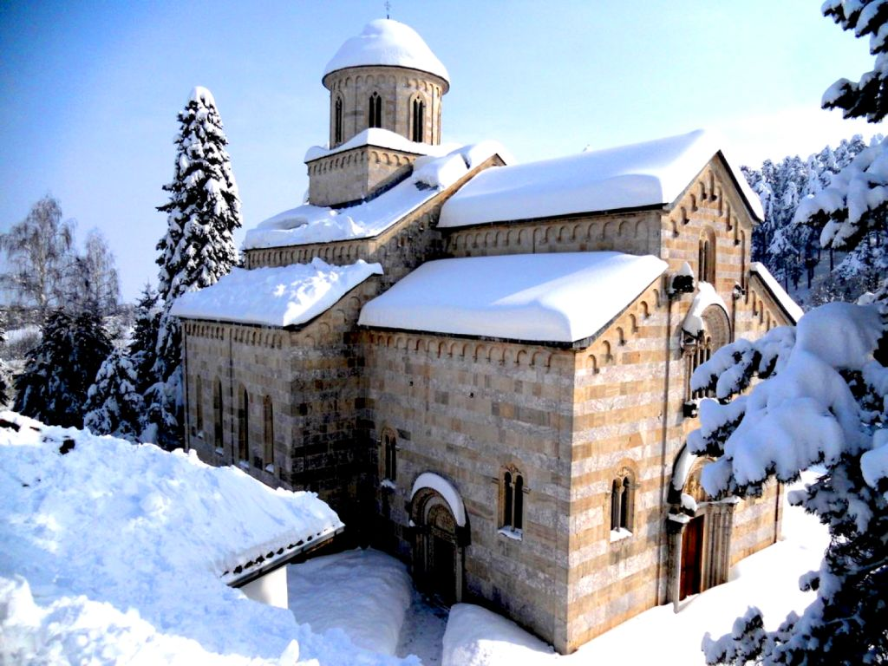
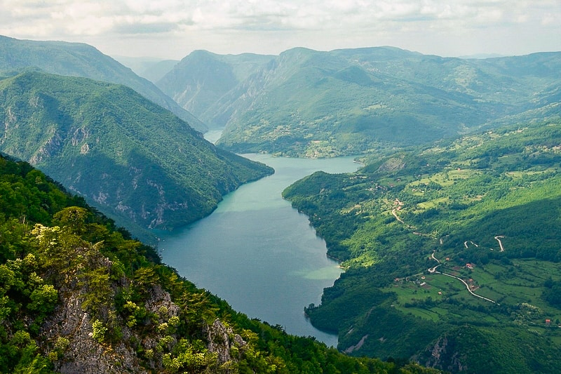
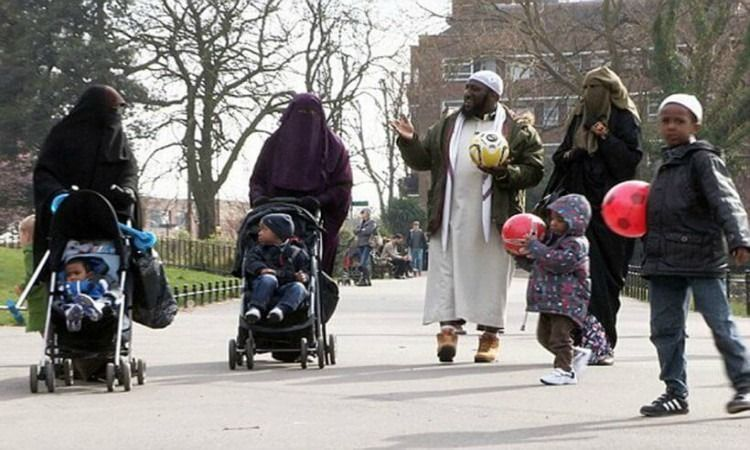

As are many other nations around the globe, Serbia finds itself at a crossroad : to crumble at the hands of corrupt politicians, western funded NGOs, communists, avaricious citizens who would trade their country for a paycheck, Islam, and many other very real threats, or to unite as a nation, build our country brick by brick, leave the excuses at the door and create a STRONG, UNIFIED, and POWERFUL Serbia.
I am the founder of Turning Point Serbia, Daniel Andric. I was cut deep by the loss of American politician and patriot Charlie Kirk, but I do not intend on letting evil win. I am of Serbian descent and I am genuinely sickened, ashamed and angry at the state that our country has fallen into. I am taking it upon myself to do what I can, as should you. Weather I am able to reform the Serbian empire, or feed a family in Kosovo for a week, I will not stop fighting. Victories, big or small, massive or microscopic will help me sleep at night.
Please explore my website below to find out how YOU can help. How YOU can be on the right side of history, and how YOU can make a difference in the world.
Serbian people in Podgorica, defending the Serbian Orthodox Church. Serbian people in Montenegro continue to fight for their identity, they face many challenges but will prevail in the end with faith in God.

A medieval fortress in the eastern part of Serbia. A beautiful place to visit, and to learn about the history of our land.
Serbian women dancing traditional folklore. It is imperative to keep traditions alive, this is how we distinguish ourselves amongst others.

Serbia's beating heart: Belgrade. A city filled with HOPE. Hram Svetog Save is our ornate church where Serbian people can practice Orthodox Christianity.

Cerski Mars, a march held every year in August. Starting in Sabac, marching all the way through 40 degree weather to the top of mount Cer, where Serbian people won the first battle of World War One. Serbian people are to be PROUD of our victories.

Our gorgeous Serbian flag. This flag not only represents our country, but our people. Our people who have fought and died for our nation. Our people who endured endless hardships for a belief of a strong Serbia. Do not let your ancestors die in vain.

Visoki Decani is one of many Serbian monasteries across the country. Our monasteries are a staple of our country. They are to be built, maintained and defended.

Serbia is a country with many varieties of breathtaking scenery. This is Serbian land. It belongs to the Serbian people.
What are the problems, and how do we fix it?

Immigration: Does this family look English to you? No? Well, that's because they're not. But they live in the UK. In fact, most people in London look like this.
If I need to explain to you why this is not healthy, then you've most likely been brainwashed by some left wing garbage. The fix for this is not simple, but fixing a country is not a simple task.
The important thing to remember is that while it is difficult to fix, we must. The immigration problem is affecting many countries worldwide. Without getting into the politics, it is clearly not good. Serbs need to get involved. Make it clear that we don't want an onslaught of 3rd worlders invading us. Over time, if enough people are involved, on multiple levels, we can have strong borders.
Birth Rate: This one is hard to hear, but it is literally essential to understand for the survival of our people. Our birth rate is under 2.0. That is simply unacceptable.
The government has the power to ban or tax contraception, which is something I plan to do on day one if I am ever in the position to.
There is nothing more fulfilling and beautiful in life than a family of your own. No amount of money, cars, mansions, or gold will ever help when you are a 60 year old cat lady. Forget that crazy corporate career, forget travelling your world till you're 30, forget saving your money to spend it on vaping, drinking and partying. Invest your money, grow up, be an adult for a change and have kids.
Economy: I have had many arguments with Serbs about the Serbian economy. I am able to summarize it: they want handouts.
Whether people are reminiscing about the FAILED state of Yugoslavia, or simply just lazy, everyone I speak to seems to tell me the same story. Something along the lines of "there is no money out there", or "Serbia is corrupt". All I hear is BS.
Singapore is the size of Belgrade geographically and they're kicking Serbia's ass economically - so it's not a land mass issue. China was far worse off than today's Serbia in the 1970's and now they're arguably the most powerful country in the world. What is Serbia's excuse? Get off your ass - start a business, make money, invest, build the economy. Malo po malo.
Fundraising: Luckily, Serbia has many very reputable non profit organizations. This is how YOU can help TODAY. More about this below.